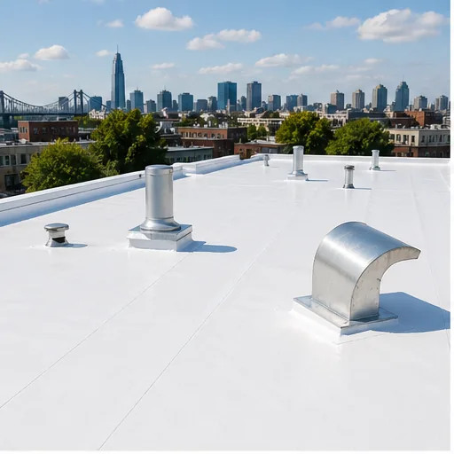
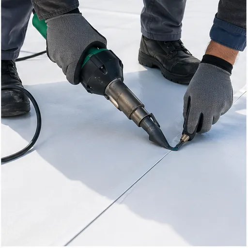
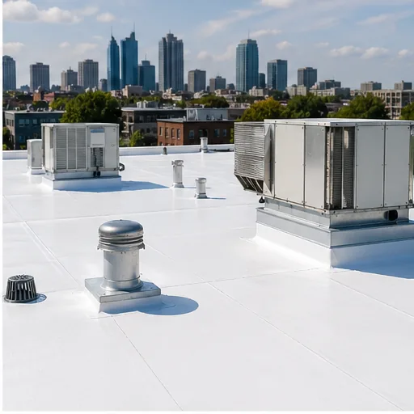
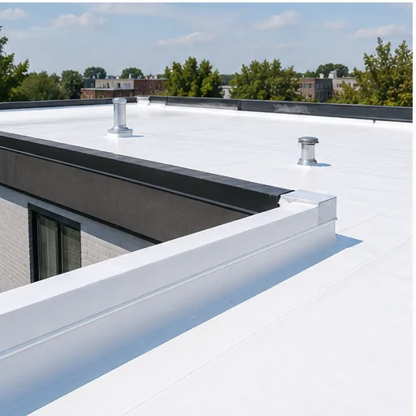
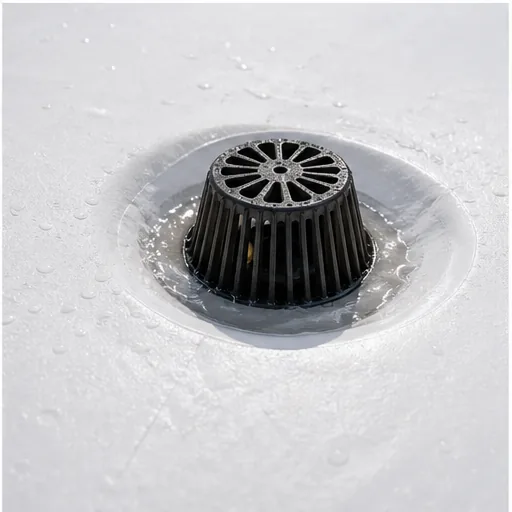
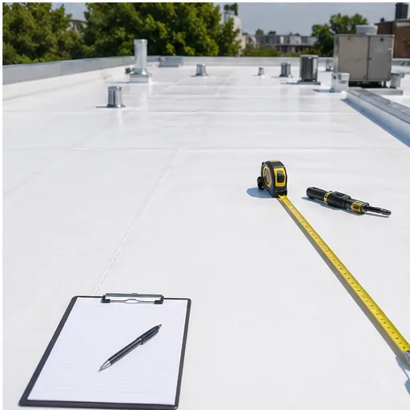

TPO Roof Installation
High-performance white TPO membrane installation for new construction, renovation and roof replacement projects in Montreal.
Couvreur TPO Mtl installs, repairs and optimizes white TPO flat roof systems for Montreal homes, duplexes, commercial buildings and renovation projects.
Couvreur TPO Mtl helps property owners protect flat and low-slope roofs with clean white TPO membrane systems. Our work is built around watertight seams, better drainage, practical repair advice and clear communication from the first inspection.
Whether you need flat roof repair in Montreal, a commercial roofing contractor for a larger project, or a residential flat roof specialist for a duplex or home addition, the goal is simple: stop leaks, extend roof life and keep the building protected through Quebec weather.
FC32+26 Montreal, Quebec
SEO-friendly, service-ready content without the fluff: TPO roof installation, flat roof repair, emergency leak service and roof optimization for residential and commercial properties across Montreal.

High-performance white TPO membrane installation for new construction, renovation and roof replacement projects in Montreal.

Targeted flat roof repair for leaks, open seams, punctures, flashings, drains and membrane damage.

TPO roofing for commercial buildings, multi-unit properties, retail spaces and light industrial flat roofs.

Residential flat roof installation and repair for homes, duplexes, triplexes, additions and garages.

Open 24 hours for urgent leaks. We protect the property quickly, then recommend the right permanent fix.

Improve drainage, reduce recurring leaks, inspect roof details and extend the life of your TPO membrane.
A TPO flat roof is a strong fit for Montreal because the membrane reflects heat, handles seasonal movement and creates welded seams that are less dependent on adhesives.
Reflective white membraneHelps reduce rooftop heat and supports energy-efficient roofing performance in summer.
Heat-welded seamsCreates a strong watertight bond across membrane laps, corners and roof details.
Drainage-focused installationGood TPO work starts with slope, drains, scuppers and details that move water off the roof.
Repairable systemMany TPO roof issues can be inspected, patched and optimized before a full replacement is needed.
The listing has 12 Google reviews and a perfect 5.0 rating. These short highlights keep the proof close to the source and avoid over-polishing the real customer voice.
"Excellent service, highly recommend."
"They did a 12,000 square foot job and completed it quickly. Miguel is the best."
"A very professional company, attentive to customer needs, and with exemplary workmanship."
Clear inspection, clean roof preparation and careful seam work are what separate a professional TPO roof from a short-term patch.
Not every flat roof leak means a full replacement. A proper roof inspection helps decide whether repair, optimization or a new TPO membrane is the smart move.
Couvreur TPO Mtl serves Montreal, Quebec and surrounding areas for TPO roofing, flat roof repair, roof membrane installation and emergency roof repair.
These FAQ headings also support search intent for TPO roofing Montreal, flat roof repair and commercial roof membrane installation.
A well-installed TPO roof can last for many years with regular inspection, clean drainage and timely repairs. Lifespan depends on roof condition, installation quality, exposure and maintenance.
Yes, many leaks can be repaired by cleaning the area, welding or patching the membrane and correcting the failed detail. A roof inspection confirms whether repair is enough.
Yes. Couvreur TPO Mtl works on commercial flat roofs, multi-unit buildings and residential flat roof projects in Montreal and nearby areas.
The white surface reflects sunlight and can reduce rooftop heat compared with darker roof materials, which helps support a cooler building envelope during summer.
Call Couvreur TPO Mtl for flat roof repair, TPO roof installation, emergency roof repair or a roof assessment in Montreal.